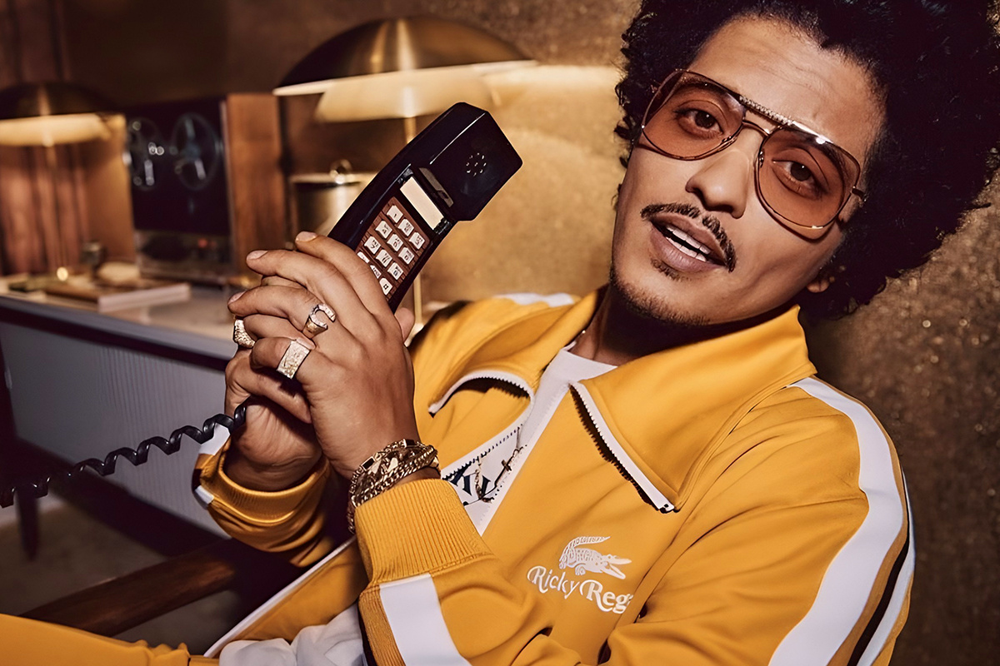
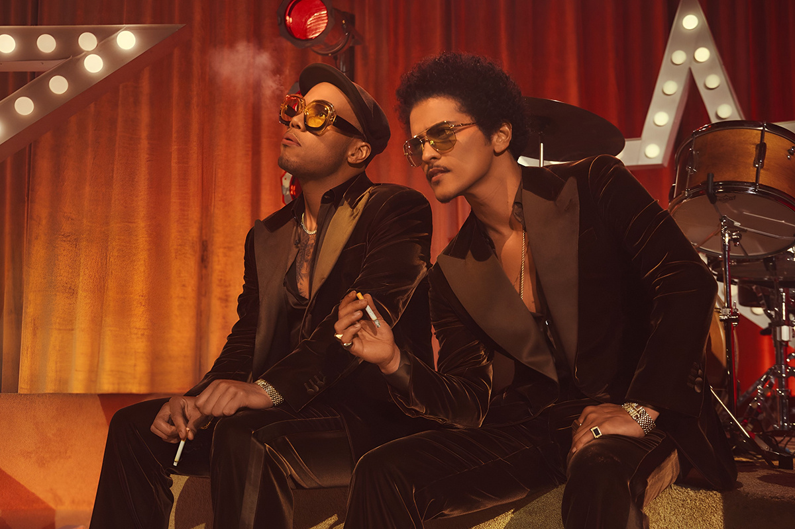
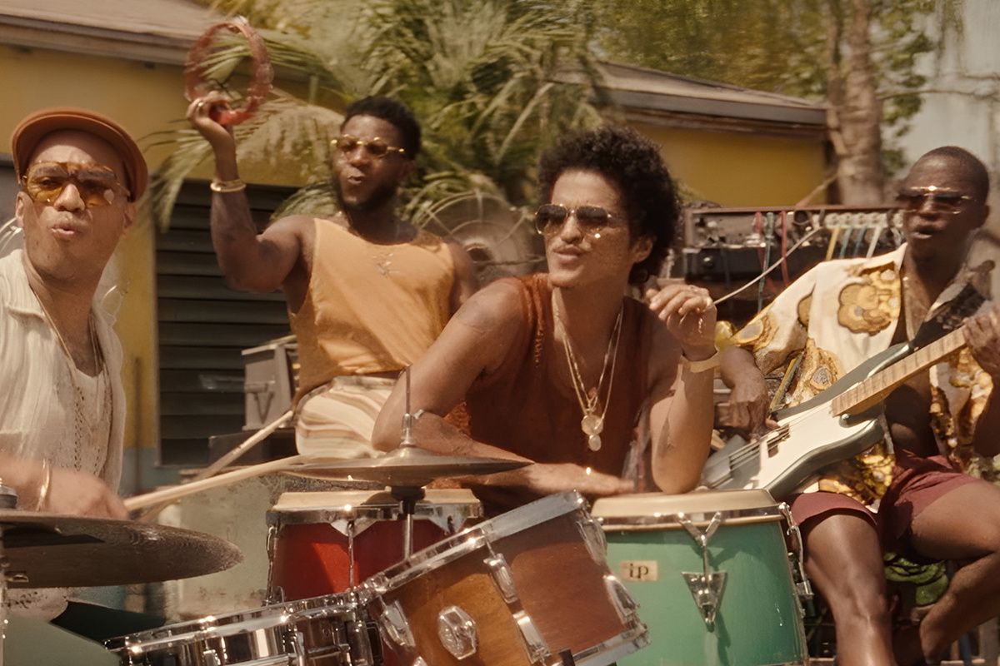

Cómo ser el N°1 sin lanzar álbumes en 10 años
El fenómeno Bruno Mars
El fenómeno Bruno Mars

Bruno Mars, el reciente ganador de los premios Grammy por su colaboración con Lady Gaga para el hit “Die With A Smile”, cerró un 2024 con un broche de oro y, definitivamente, comenzó el 2025 con el pie derecho. Por si no te suena la canción (aunque lo dudamos), acá te dejamos el video para que le des una vuelta.
El artista tras algunos de los mayores éxitos de la década de los 2010 —a saber, “Just the Way You Are”, “Talking To the Moon”, “Treasure” y “Uptown Funk”, entre muchos otros— ha logrado mantenerse estoico en las listas musicales, no sólo porque sus canciones tienen la virtud de la frescura y que pareciera que sobre ellas no pasan los años, sino porque, a punta de colaboraciones, ha logrado mantenerse en boga en una industria dinámica y competitiva.
Hace solo unos días se confirmó que Bruno Mars, a nueve años del lanzamiento de su último trabajo en solitario, “24K Magic”, ha logrado superar los 150 millones de oyentes mensuales en Spotify, números nunca antes vistos en la plataforma de streaming. Cabe destacar que este récord se registra ante los rumores ya desmentidos que el artista se encontraba con una inmensa deuda con el reconocido casino y hotel MGM en Las Vegas.

Pero la gran pregunta sería, ¿cómo hizo Bruno Mars para seguir haciendo números sin un trabajo musical directo de su autoría? Acá intentaremos responder, a grandes rasgos, a esta interrogante.
Al gran éxito de “Die With a Smile” junto a Lady Gaga (canción publicada en agosto del 2024 y con la cual casi llegan a las 1.8 mil millones de reproducciones en Spotify), se le sumó de cerquita el lanzamiento de “APT.”, canción extremadamente pegajosa, que lanzó junto a la vocalista del popular grupo de K-pop BLACKPINK, Rosé. Esta canción está ad portas de superar las 1.1 mil millones de reproducciones en la plataforma de streaming (ojo que en YouTube ya superó los mil millones de vistas) y fue lanzada en octubre, a menos de dos meses de la colaboración con Gaga.
Lo anterior quiere decir que, en menos de 60 días, Bruno Mars colaboró en dos canciones que construyeron la segunda mitad del 2024, junto a dos mega estrellas de diferentes nichos, siendo Bruno una por sí mismo. No tenía cómo salir mal.
Igual, no está de más comentar que previo al lanzamiento de estos viralísimos singles, Bruno Mars ya estaba fidelizando su popularidad a nivel mundial con una serie de conciertos de estadio realizados entre el 2023 y el 2024, convocando a millones de personas en países como Japón, Corea del Sur, México y Brasil y haciendo sold out en todos sus shows.
Uno de los tópicos más llamativos de estos conciertos, fue que el cantante dedicó a través de sus redes algunos vídeos recopilatorios de varios de los países donde se presentó, donde también se incluía una canción original con los sonidos identitarios de estos lugares. Una de las que llamó la atención fue “Bruninho”, single que conmemoró sus cinco shows en Brasil. Esta canción se liberó por primera vez en sus redes sociales el 7 de noviembre del 2024 y ha comenzado a viralizarse en TikTok con casi 5 millones de usuarios utilizando el audio que, de hecho, ni siquiera es el original.

Vean el vídeo que lo comenzó todo y díganme si no es el perfecto ejemplo de una excelente estrategia de marketing en la era de los vídeos cortos:
Sobre Japón, también existió un extra. Más bien, dos. Acá, trabajó en un jingle junto al gigante Don Quijote, una cadena de mega tiendas originarias del país —y que por su popularidad se expandió a otros países de Asia—y que se caracteriza por su variedad de productos, donde se pueden encontrar desde económicos souvenirs, hasta artículos de lujo. ¿Otro punto con Japón? Una colaboración exclusiva con la gatita más conocida del país: Hello Kitty.
Justo terminando esta racha ganadora, que finalizó con su premiación en los Grammy, Mars colaboró con la controversial rapera Sexyy Red en el single “Fat Juicy & Wet”, aunque con un éxito bastante menos arrollador que sus featurings pasados.
Con toda esta bajada, creo que solo queda sacarse el sombrero ante Bruno Mars y su equipo por su tremendo ojo clínico y por las perfectas estrategias para cimentar una carrera activa que se encontraba en reposo. Esto, sumado al innegable talento y carisma del cantante, tuvo como resultado lo que ya vemos: un artista completo y multifacético que logra mantenerse más vigente que nunca.
 Cultura
CulturaSé que suena raro hablar de calor extremo mientras en Chile todos están buscando la parka más gruesa del clóset.
 Cultura
CulturaEl hecho de que estemos entrando al mes de julio no se puede creer. Pero lo que tampoco se puede creer es la cantidad de artistas que han…
 Cultura
CulturaCuando hablamos de trabajos clásicos de la música chilena, siempre se nombran los discos de Violeta Parra, Víctor Jara, Los Jaivas o…